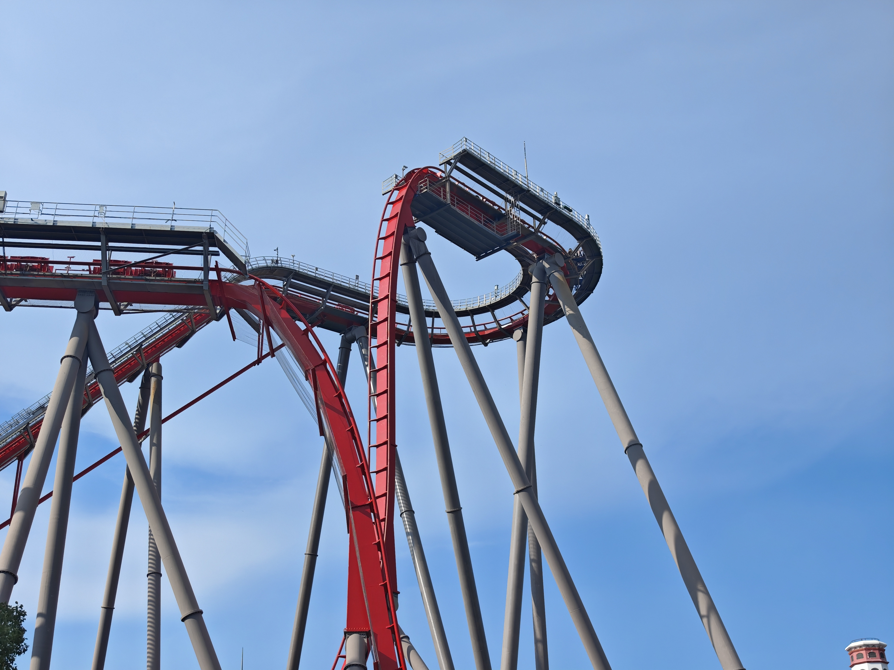
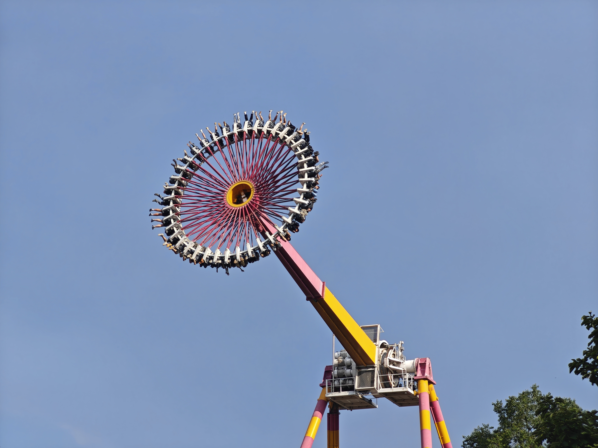
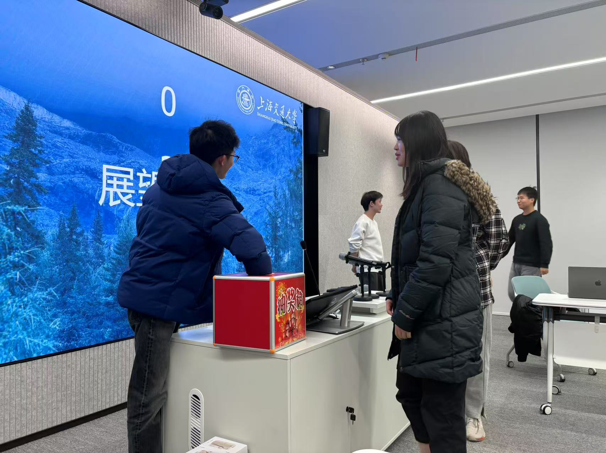
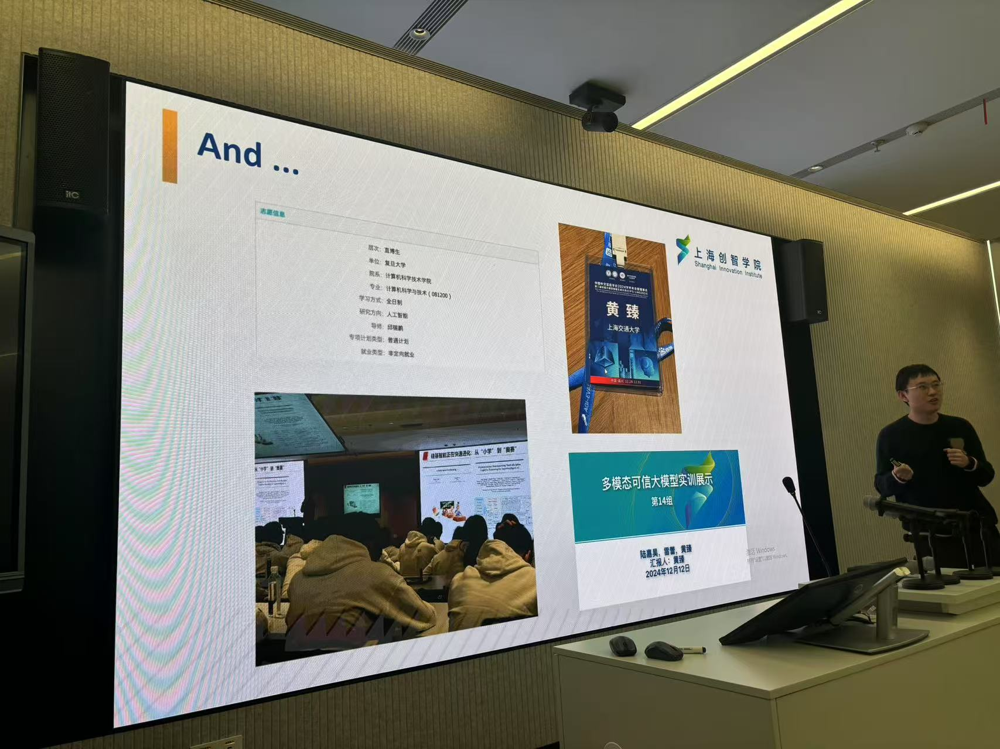
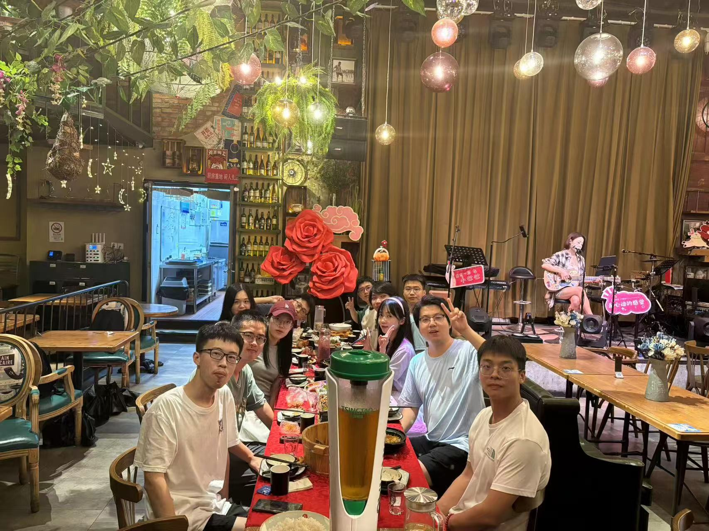
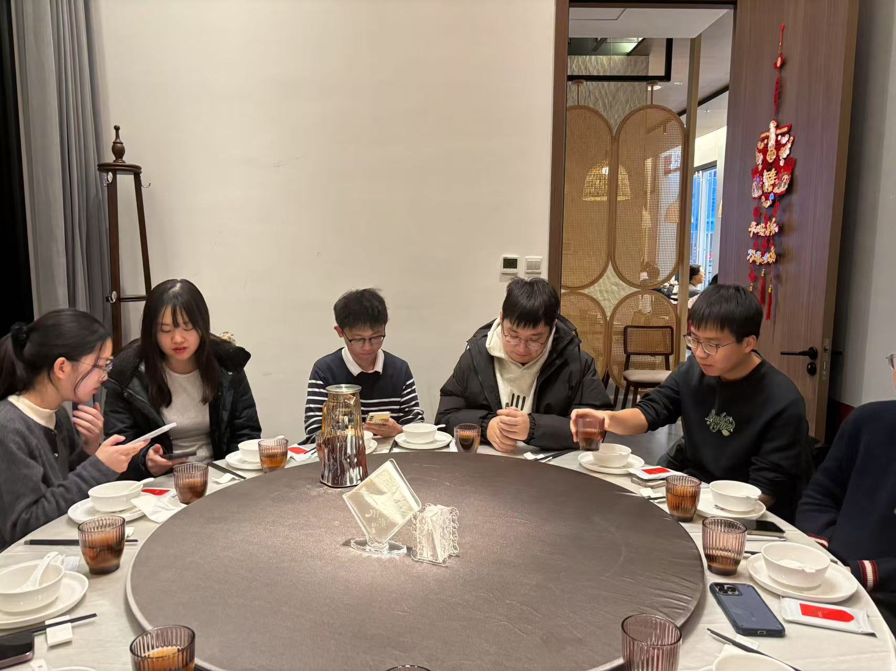

Shanghai Happy Valley
A summer team day filled with conversations, rides and time together outside the research routine.
Team outings, annual gatherings and milestone dinners strengthen the relationships behind ambitious collaborative research.


A summer team day filled with conversations, rides and time together outside the research routine.


A day at Shanghai Disneyland and another chapter in the team's shared story.



Reflecting on a year of research, recognizing collective effort and looking ahead.



Celebrating submissions, acceptances and the many invisible steps that turn an idea into shared work.